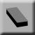
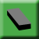
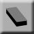
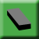

pixeledit
Attribution
Make your own pixel editing program, pages 52-55, by Mark Vanstone.
Licensed under Creative Commons Attribution-NonCommercial-ShareAlike 3.0 Unported.
Original Python code
# Pixel Edit
import pgzrun, pygame
mysprite = pygame.Surface([100,100])
transColour = pygame.Color(255, 0, 255)
mysprite.set_colorkey(transColour)
mysprite.fill(transColour)
mygrid = pygame.Surface([600,600])
mygrid.set_colorkey(transColour)
mygrid.fill(transColour)
for x in range(0,100):
pygame.draw.line(mygrid,pygame.Color(100, 100, 100),(x*6,0), (x*6,600))
for y in range(0,100):
pygame.draw.line(mygrid,pygame.Color(100, 100, 100),(0,y*6), (600,y*6))
curMouseX = 0
curMouseY = 0
drawing = False
saving = False
eraseOn = False
curColour = pygame.Color(255, 0, 0)
curTool = 2
def draw():
screen.fill((150,150,150))
screen.draw.filled_rect(Rect((600, 0), (800, 600)), (200, 200, 200))
screen.draw.text("PIXELEDIT", center = (700, 30), owidth=1, ocolor=(255,255,255), color=(0,0,255) , fontsize=40)
mylargesprite = pygame.transform.scale(mysprite, (600, 600))
mylargesprite.set_colorkey(transColour)
screen.blit(mylargesprite,(0,0))
screen.blit(mysprite,(650,400))
screen.blit(mygrid,(0,0))
screen.blit("palette",(620,50))
if saving == True:
screen.blit("savebuttonhigh",(625,520))
else:
screen.blit("savebutton",(625,520))
if curTool == 1:
screen.blit("tool1high",(625,325))
else:
screen.blit("tool1",(625,325))
if curTool == 2:
screen.blit("tool2high",(675,325))
else:
screen.blit("tool2",(675,325))
if eraseOn:
screen.blit("tool3high",(725,325))
else:
screen.blit("tool3",(725,325))
screen.draw.rect(Rect((650, 400), (100, 100)), (0,0,0))
if(curMouseX < 600):
if curTool == 1:
if eraseOn:
screen.draw.filled_rect(Rect((curMouseX, curMouseY), (6, 6)), pygame.Color(255, 255, 255))
else:
screen.draw.filled_rect(Rect((curMouseX, curMouseY), (6, 6)), curColour)
if curTool == 2:
if eraseOn:
screen.draw.filled_circle((curMouseX, curMouseY), 24, pygame.Color(255, 255, 255))
else:
screen.draw.filled_circle((curMouseX, curMouseY), 24, curColour)
def on_mouse_move(pos):
global curMouseX, curMouseY
curMouseX = int(pos[0]/6)*6
curMouseY = int(pos[1]/6)*6
if drawing == True:
spriteX = int(pos[0]/6)
spriteY = int(pos[1]/6)
if curTool == 1:
if eraseOn:
mysprite.set_at((spriteX,spriteY),transColour)
else:
mysprite.set_at((spriteX,spriteY),curColour)
if curTool == 2:
if eraseOn:
pygame.draw.circle(mysprite, transColour, (spriteX, spriteY), 4, width=0)
else:
pygame.draw.circle(mysprite, curColour, (spriteX, spriteY), 4, width=0)
def on_mouse_down(pos):
global drawing,curColour,curTool,saving,eraseOn
if pos[0] < 600:
drawing = True
spriteX = int(pos[0]/6)
spriteY = int(pos[1]/6)
if curTool == 1:
if eraseOn:
mysprite.set_at((spriteX,spriteY),transColour)
else:
mysprite.set_at((spriteX,spriteY),curColour)
if curTool == 2:
if eraseOn:
pygame.draw.circle(mysprite, transColour, (spriteX, spriteY), 4, width=0)
else:
pygame.draw.circle(mysprite, curColour, (spriteX, spriteY), 4, width=0)
else:
if pos[0] > 625 and pos[0] < 775 and pos[1] > 520 and pos[1] < 585:
saving = True
saveImage()
if pos[0] > 620 and pos[0] < 770 and pos[1] > 50 and pos[1] < 300:
curColour = screen.surface.get_at(pos)
if pos[0] > 625 and pos[0] < 675 and pos[1] > 325 and pos[1] < 375:
curTool = 1
if pos[0] > 675 and pos[0] < 725 and pos[1] > 325 and pos[1] < 375:
curTool = 2
if pos[0] > 725 and pos[0] < 775 and pos[1] > 325 and pos[1] < 375:
eraseOn = not eraseOn
def on_mouse_up(pos):
global drawing,saving
drawing = False
saving = False
def saveImage():
mysavingsprite = mysprite.convert_alpha()
pygame.image.save(mysavingsprite,"mysprite.png")
pgzrun.go()